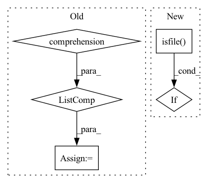

Pattern ID :1257
Before Change
continue
task_subsets = [p for p in glob(osp.join(task_path, "*.txt"))
if "_" not in osp.basename(p)]
subset_paths += [(task, extractor_type, p) for p in task_subsets]
return subset_paths
After Change
// find root path for the dataset and use it for all tasks
root_path = None
for extractor_type, task_dir in cls._TASKS.values():
if osp.isfile( path) and \
not osp.basename(osp.dirname(path)) == task_dir:
continue
In pattern: SUPERPATTERN
Frequency: 4
Non-data size: 5
Instances Fragment ID: 6301328
Project Name: openvinotoolkit/datumaro
Commit Name: 839ca35beaf8e5f11efcb86d9cfd03c693d8b9bb
Time: 2021-06-09
Author: maxim.zhiltsov@intel.com
File Name: datumaro/plugins/voc_format/importer.py
M Class Name: VocImporter
N Class Name: VocImporter
M Method Name: find_sources(2)
N Method Name: find_sources(2)
M Parent Class: Importer
N Parent Class: Importer
M File Name: datumaro/plugins/voc_format/importer.py
N File Name: datumaro/plugins/voc_format/importer.py
M Start Line: 61
M End Line: 77
N Start Line: 51
N End Line: 75
Before Change
def _load_annotations(self):
annotations = defaultdict(list)
task_dir = osp.dirname(self._path)
anno_files = [s for s in dir_items(task_dir, ".txt")
if s.endswith("_" + osp.basename(self._path))]
for ann_filename in anno_files:
with open(osp.join(task_dir, ann_filename), encoding="utf-8") as f:
label = ann_filename[:ann_filename.rfind("_")]
label_id = self._get_label_id(label)After Change
task_dir = osp.dirname(self._path)
for label_id, label in enumerate(self._categories[AnnotationType.label]):
ann_file = osp.join(task_dir, f"{label.name}_{self._subset}.txt")
if not osp.isfile( ann_file) :
continue
with open(ann_file, encoding="utf-8") as f: Fragment ID: 6301338
Project Name: openvinotoolkit/datumaro
Commit Name: 4dba6e4eafd99aed88b44908cd9c0e32be0bf272
Time: 2021-10-14
Author: maxim.zhiltsov@intel.com
File Name: datumaro/plugins/voc_format/extractor.py
M Class Name: VocClassificationExtractor
N Class Name: VocClassificationExtractor
M Method Name: _load_annotations(1)
N Method Name: _load_annotations(1)
M Parent Class: _VocExtractor
N Parent Class: _VocExtractor
M File Name: datumaro/plugins/voc_format/extractor.py
N File Name: datumaro/plugins/voc_format/extractor.py
M Start Line: 102
M End Line: 115
N Start Line: 99
N End Line: 112
Before Change
pattern: str,
allowed_extensions: Optional[list] = None,
) -> List[PurePath]:
all_data_files = [
PurePath("/" + dataset_file.rfilename) for dataset_file in dataset_info.siblings
] // add a / at the beginning to make the pattern **/* match files at the root
data_files_ignore = FILES_TO_IGNORE
matched_paths = [
filepath.relative_to("/")After Change
) -> List[PurePath]:
data_files_ignore = FILES_TO_IGNORE
fs = HfFileSystem(repo_info=dataset_info)
glob_iter = [PurePath(filepath) for filepath in fs.glob(pattern) if fs.isfile( filepath) ]
matched_paths = [
filepath
for filepath in glob_iter Fragment ID: 6301325
Project Name: huggingface/datasets
Commit Name: 1406a04c3e911cec2680d8bc513653e0cafcaaa4
Time: 2021-11-23
Author: boris.dayma@gmail.com
File Name: src/datasets/data_files.py
M Class Name: AnonimousClass
N Class Name: AnonimousClass
M Method Name: _resolve_single_pattern_in_dataset_repository(3)
N Method Name: _resolve_single_pattern_in_dataset_repository(3)
M Parent Class:
N Parent Class:
M File Name: src/datasets/data_files.py
N File Name: src/datasets/data_files.py
M Start Line: 283
M End Line: 290
N Start Line: 304
N End Line: 308
Before Change
if is_relative_path(pattern):
glob_iter = list(Path(base_path).rglob(pattern))
else:
glob_iter = [Path(filepath) for filepath in glob.glob(pattern)]
matched_paths = [
filepath.resolve()
for filepath in glob_iterAfter Change
pattern = os.path.join(base_path, pattern)
data_files_ignore = FILES_TO_IGNORE
fs = LocalFileSystem()
glob_iter = [PurePath(filepath) for filepath in fs.glob(pattern) if fs.isfile( filepath) ]
matched_paths = [
Path(filepath).resolve()
for filepath in glob_iter Fragment ID: 6301327
Project Name: huggingface/datasets
Commit Name: 1406a04c3e911cec2680d8bc513653e0cafcaaa4
Time: 2021-11-23
Author: boris.dayma@gmail.com
File Name: src/datasets/data_files.py
M Class Name: AnonimousClass
N Class Name: AnonimousClass
M Method Name: _resolve_single_pattern_locally(3)
N Method Name: _resolve_single_pattern_locally(3)
M Parent Class:
N Parent Class:
M File Name: src/datasets/data_files.py
N File Name: src/datasets/data_files.py
M Start Line: 115
M End Line: 123
N Start Line: 120
N End Line: 126